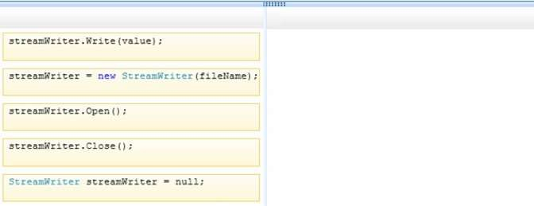
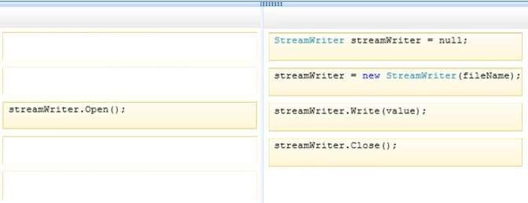

|
DRAG DROP You are developing an application that will write string values to a file. The application includes the following code segment. (Line numbers are included for reference only.) 01 protected void ProcessFile(string fileName, string value) 02 { 03 04 } You need to ensure that the ProcessFile() method will write string values to a file. Which four code segments should you insert in sequence at line 03? (To answer, move the appropriate code segments from the list of code segments to the answer area and arrange them in the correct order.) Select and Place:  Correct Answer:  Section: Volume B Explanation Explanation/Reference: Explanation: Note: StreamWriter.Null Field Provides a StreamWriter with no backing store that can be written to, but not read from. Incorrect Answers: Not StreamWrite.Open(); The StreamWriter Class does not have any method named Open. ExplicaciónRespuesta:Mostrando de manera visual la respuesta:Fuentes:https://docs.microsoft.com/es-es/dotnet/api/system.io.streamwriter?view=net-5.0 |